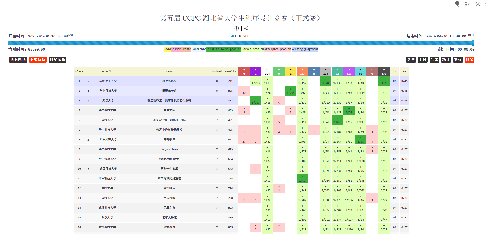
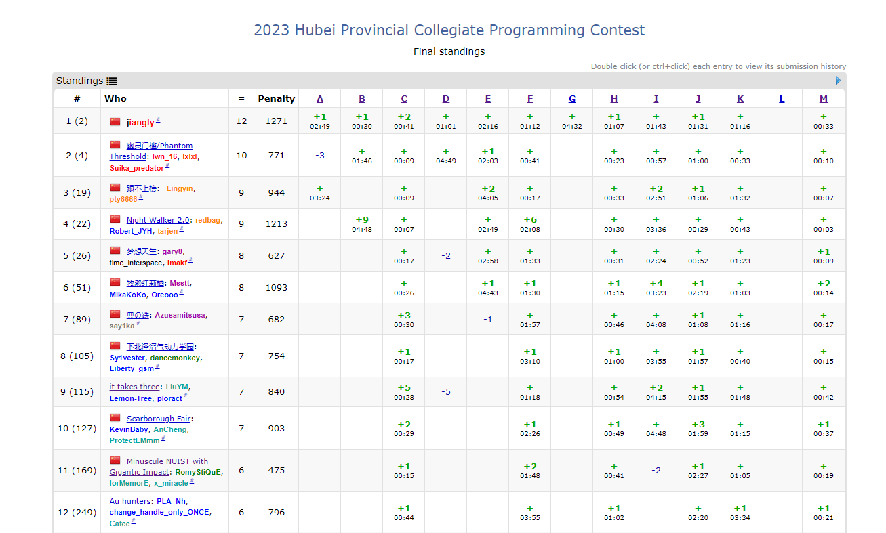

2023 Hubei Provincial Collegiate Programming Contest
Rank 15/170 金 7题 罚时840
但是就经验而言，现场和VP，在发挥程度上，会相差一到两个题目。
所以这场如果是打现场赛的话，大概率是银中到银顶的水平。


正片开始。
C - Darkness I
开幕雷击，签到先罚五发。
可能中午十二点还没睡醒，然后我也不知道在干什么，在那边疯狂wa。
主要思想就是，你先摆一个对角线，然后剩下来的，隔一行摆一个就行。
另外，有意思的是，你会发现，摆一个黑棋子，实际上效果有三种。
-
(x + 1) \and (y + 1)
-
(x + 2) \and (y + 0)
-
(x + 0) \and (y + 2)
void solve() {
int n, m;
cin >> n >> m;
cout << (n + m + 1) / 2 << endl;
}
M - Different Billing
实际上，就是一个枚举的过程。
直接枚举模拟即可。
void solve()
{
int x,y;
cin >> x >> y;
for(int i = 0;i <= x;i ++)
{
int valc = y - 1000 * i;
if(valc % 2500 == 0 && valc / 2500 + i >= 0 && valc / 2500 + i <= x){
int cntc = valc/2500;
int cntb = i;
cout << x - cntc -cntb << ' ' << cntb << ' ' << cntc << endl;
return;
}
}
cout << "-1" << endl;
}
H - Binary Craziness
由握手定理 \sum_{i = 1}^{n} deg_{i} = 2 \times m
设有x种度数的点，$ {2}\times m = (\sum_{i = 1}^{n} deg_{i}) \geq (\sum_{i = 1}^{x} i )= \frac {(x + 1) \times x}{2}$
注意到种数是O(\sqrt{2 \times m}) 的。
直接暴力统计即可。
const int mod = 998244353;
const int N = 1e6 + 100;
int deg[N];
int n,m;
void solve()
{
cin >> n >> m;
for(int i = 0;i <= n + 5;i ++) deg[i] = 0;
for(int i = 0;i < m;i ++){
int u,v;
cin >> u >> v;
deg[u] ++;
deg[v] ++;
}
map<int,int> cnt;
for(int i = 1;i <= n;i ++) cnt[deg[i]] ++;
int res = 0;
for(auto i : cnt){
for(auto j : cnt){
if(i >= j) continue;
int di = i.first;
int dj = j.first;
res += ( (di & dj) % mod * (di ^ dj) % mod * (di | dj) % mod * i.second % mod * j.second ) % mod;
res %= mod;
}
}
cout << res % mod << endl;
}
F - Inverse Manacher
咕咕咕
K. Dice Game
每个人是独立的，对于单独的人进行讨论。
只需要分两种情况即可。
一种是平，一种是输。平的继续往后分情况算即可。最后是等比求和计算出答案即可。
J. Expansion
首先先算出前缀和作为代价。
注意到，如果最后一个的代价是负的，答案就是-1。
然后我们，记录当前的资源数，和走到当前位置为止，前缀和中最大数值。
每次，我们不够减的时候，只需要反悔的回到前缀和中最大数值的地方，进行获取资源即可。
评价:题意较为难懂，我和队友看了好一会儿题意。
int n;
const int N = 1e6 + 100;
int a[N];
int pre[N];
void solve()
{
cin >> n;
for(int i = 1;i <= n;i ++) cin >> a[i];
for(int i = 1;i <= n;i ++) pre[i] = pre[i - 1] + a[i];
if(pre[n] < 0)
{
cout << -1 << endl;
return;
}
int nowv = 0;
int res = n;
int maxv = 0;
for(int i = 1;i <= n;i ++)
{
if(pre[i] + nowv < 0){
if(maxv == 0)
{
cout << "-1" << endl;
return;
}
int cnt = (abs(nowv + pre[i]) + maxv - 1) / maxv;
//cout << i << ' ' << cnt << ' ' << nowv endl;
nowv += ( cnt * maxv + pre[i] );
res += cnt;
}
else nowv += pre[i];
maxv = max(maxv,pre[i]);
}
cout << res << endl;
}
I - Step
题意如下：

注意到 t 和t + 1 是质因子。所以在 2 \times LCM 的质因子归属上有对立性 ~~( 互斥性)~~
我们枚举质因子种数，发现m \leq 15
然后我们只需要直接二进制枚举归属即可。
注意到，
2 \times LCM \times k = t \times(t + 1)
我们设，
a \times x = t + 1
b \times y = t
则有，
a \times b = 2 \times LCM
a \times x - b \times y = 1
我们通过二进制枚举因子的归属，来确定a和b的数值，然后使用exgcd 来进行计算即可。
```cpp const int inf = 1e18; int exgcd(int a, int b, int &x, int &y) { if (b == 0) { x = 1, y = 0; return a; } int d = exgcd(b, a % b, y, x); y -= a / b * x; return d; }
int gcd(int a, int b) { return b == 0 ? a : gcd(b, a % b); }
void solve()
{
int n;
cin >> n;
vector
lcm = lcm * 2;
vector<int> vec;
int tmp = lcm;
for (int i = 2; i * i <= tmp; i ++ )
{
int p = 1;
while(tmp % i == 0)
{
tmp /= i;
p *= i;
}
if (p > 1) vec.push_back(p);
}
if (tmp != 1) vec.push_back(tmp);
int ans = inf;
int t = vec.size();
for (int i = 0; i < (1 << t); i ++ )
{
int a = 1, b = 1;
for (int j = 0; j < t; j ++ )
{
if (i & bit(j))
{
a = a * vec[j];
}else
{
b = b * vec[j];
}
}
if (gcd(a, b) != 1) continue;
int x, y;
int d = exgcd(a, b, x, y);
int kx = b / d;
// exgcd(a, -b, x, y);
int xm = (x % kx + kx) % kx;
if (xm == 0) xm = kx;
// cout << x << ' ' << y << '\n';
if (xm * a != 1) ans = min(ans, a * xm - 1);
}
cout << ans << '\n';
} ```